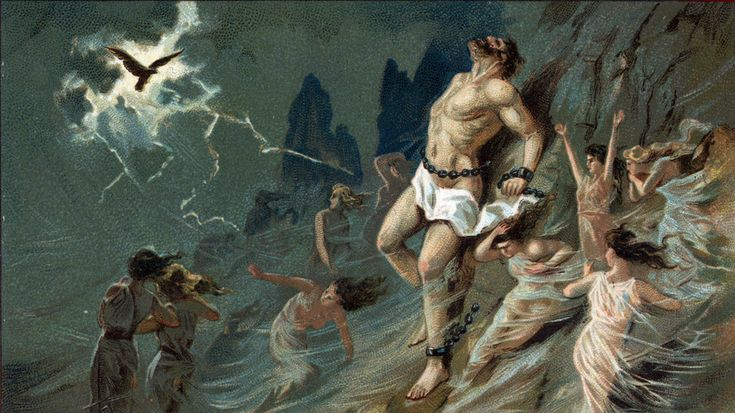

Origins of Prometheus
In our mythology, the Titan Prometheus has a reputation as being a clever trickster, and he famously gave us, the Greeks, the gift of fire and the skill of metalwork, an action for which he was punished by Zeus, who ensured that an eagle ate the liver of the Titan as he was helplessly chained to a rock every single day.
As we know, Prometheus was one of the ringleaders of the battle between the Titans and the Olympian gods led by Zeus to gain control of the heavens, a struggle which was said to have lasted ten years. In our tradition of the creation of humanity, Prometheus made the first man from clay, whilst in others, the gods made all creatures on Earth, and Epimetheus and Prometheus were given the task of endowing them with gifts so that they might survive and prosper.
